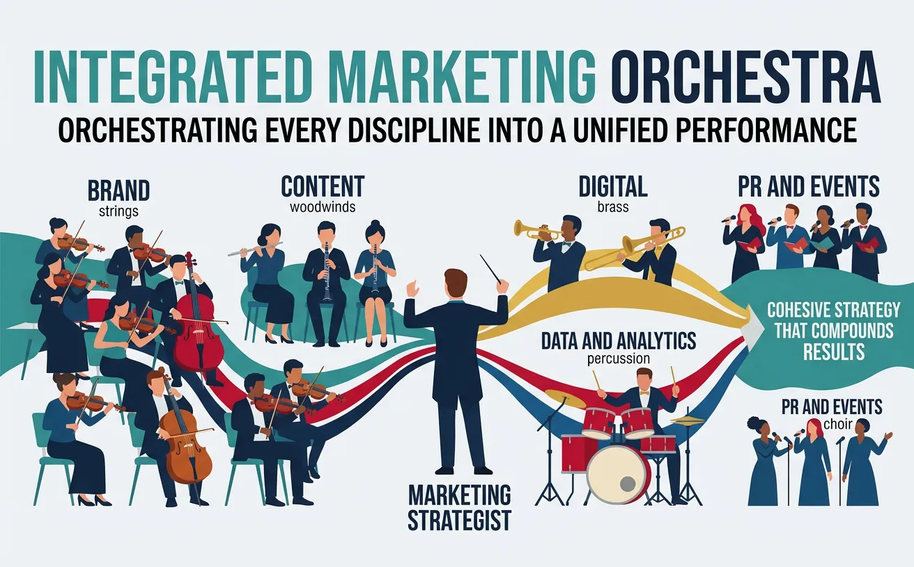
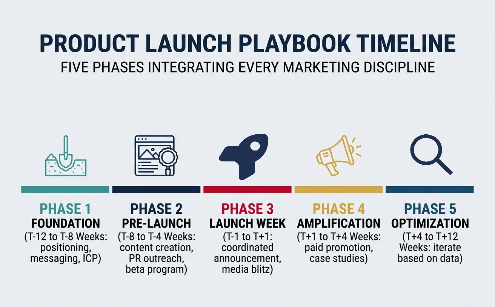
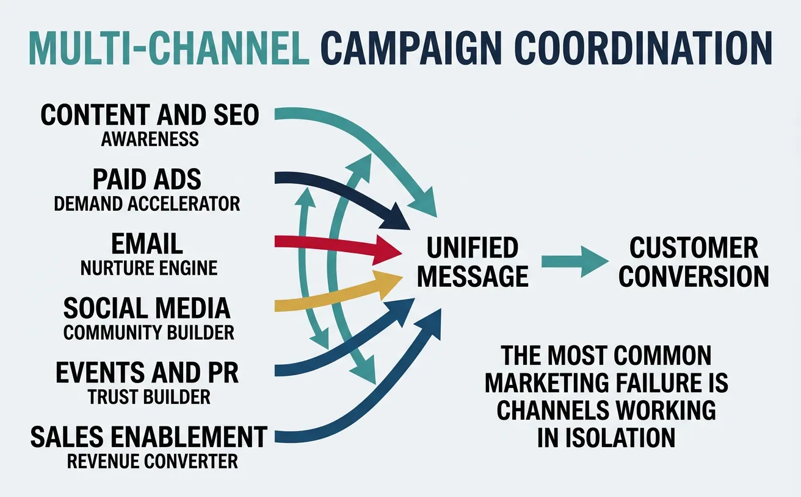
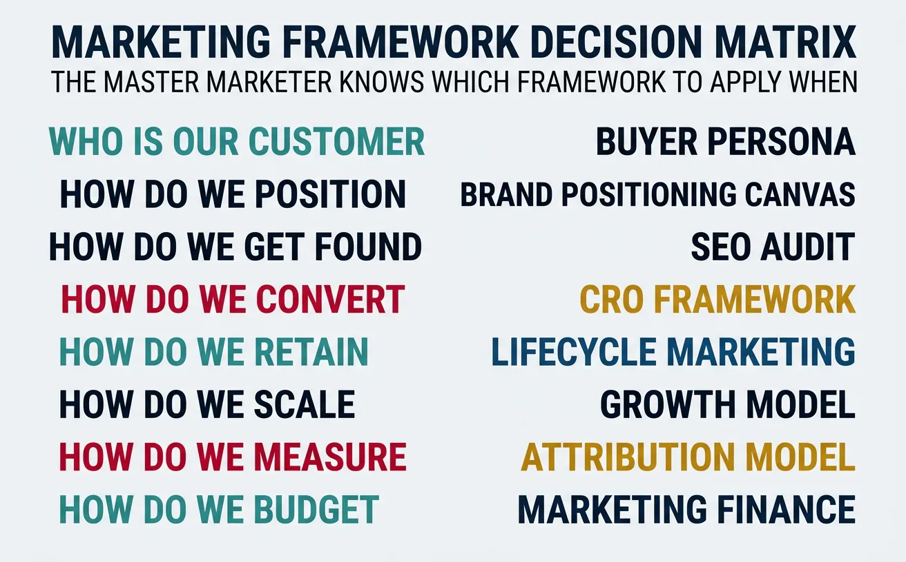

We use cookies to enhance your browsing experience, serve personalized content, and analyze our traffic.
By clicking "Accept All", you consent to our use of cookies. See our
Privacy Policy
for more information.
Marketing & Strategy Series Part 21: Integrated Marketing Strategy Capstone
February 12, 2026Wasil Zafar35 min read
Master integrated marketing with full-stack case studies, comprehensive playbooks, campaign orchestration, and strategic synthesis across all 21 parts.
Part 21 of 21 - Series Capstone: This final article synthesizes all 20 previous parts into comprehensive case studies and integrated playbooks for real-world marketing mastery.
The difference between knowing marketing concepts and being a great marketer is the ability to integrate all 20 parts of this series into a cohesive, executable strategy. Think of it like learning individual musical instruments versus conducting an orchestra — the real art is making everything work together in harmony.

Great marketing orchestrates every discipline — brand, content, digital, and data — into a cohesive strategy that compounds results
Integration Is the Superpower: Most marketers are skilled in 2-3 disciplines. The ones who become CMOs, VPs, and marketing leaders can orchestrate across all disciplines simultaneously. This capstone teaches you to see the full picture and make every channel, tactic, and budget dollar work together.
Full-Stack Case Study: Glossier ($1.8B Valuation) — B2C DTC Mastery
B2CDTC Beauty
How every series concept was integrated:
Series Part
Concept Applied
Glossier's Execution
Part 1: Fundamentals
Product-Market Fit
Built products based on community feedback (Into The Gloss blog readers → product voters)
Part 2: Psychology
Social proof + Identity
"Skin first, makeup second" identity resonated with millennials rejecting traditional beauty standards
Part 3: Brand
Brand as community
Pink bubble-wrap pouches became a status symbol; 70% of growth from word-of-mouth + peer referrals
Part 5: Content
Content-first strategy
Into The Gloss blog → 1.5M monthly readers before first product launched
Part 6: Social
Community-led growth
Customer photos > professional shots; UGC drove 10× more engagement than branded content
Part 11: Growth
Referral loops
Every customer got a unique referral link; top 100 reps generated more revenue than some stores
Key Lesson: Glossier's success wasn't any single tactic — it was the compounding effect of community (Part 6) feeding content (Part 5) feeding brand (Part 3) feeding referrals (Part 11), all powered by deep customer psychology (Part 2). Each element amplified the others.
$5.25 LTV-to-CAC ratio; justified massive sales and marketing spend (>50% of revenue) because of expansion economics
Key Lesson: Snowflake proved that B2B marketing at scale requires brand differentiation (category creation) combined with product-led adoption (developer access) and enterprise sales motion (ABM + sales enablement) — all powered by unit economics that justify aggressive investment.
Startup Growth Case Study
Full-Stack Case Study: Notion ($10B Valuation) — PLG Startup Mastery
StartupPLG
How every series concept was integrated:
Series Part
Concept Applied
Notion's Execution
Part 1: Fundamentals
PMF iteration
Failed twice before finding PMF; pivoted from developer tools to all-in-one workspace
Template-first onboarding: new users start with pre-built workspace, not empty page (3× activation)
Part 11: Growth
Viral loops
Shared workspaces = viral distribution; every invite = new user exposure (k-factor >1)
Part 14: Distribution
Community channel
Notion Ambassadors program: 200+ community leaders running local meetups globally
Part 18: Personal Brand
CEO as thought leader
Ivan Zhao's design philosophy and vision became core to Notion's brand narrative
Key Lesson: Notion grew from near-death to $10B by making the product itself the marketing engine. Templates (content) drive discovery, shared workspaces (distribution) drive viral adoption, and community creators (social) drive education — all without a traditional marketing team until they reached millions of users.
Integrated Playbooks
Product Launch Playbook
A successful product launch integrates every marketing discipline in a precisely timed sequence. Here's the integrated launch playbook referencing concepts from throughout the series:

A successful product launch follows five precisely timed phases, each leveraging different marketing disciplines in sequence
The Launch Coordination Rule: Every launch needs a single "launch captain" who holds the master timeline and has authority to make real-time decisions. Without this person, channels work in silos — PR goes early, sales isn't briefed, email sends conflict with ads. The captain doesn't do the work; they orchestrate the timing and resolve conflicts.
Scale-Up Playbook
Scaling from $1M to $100M requires fundamentally different marketing at each stage. What works at $1M will break at $10M, and what works at $10M will be insufficient at $100M:
Revenue Stage
Primary Marketing Focus
Channel Mix
Team Size
Key Constraint
$0-$1M
Product-market fit validation
1-2 channels (founder-led outbound, content)
0-1 (founder does marketing)
Finding what resonates
$1M-$5M
Repeatable playbook
2-3 channels proven at scale
2-4 (first marketing hires)
Building processes that don't depend on founder
$5M-$20M
Channel diversification
4-6 channels with dedicated owners
5-15 (specialized roles)
CAC creep as you exhaust easy audiences
$20M-$50M
Brand + demand gen balance
6-8 channels including brand/PR
15-30 (VP + managers + ICs)
Scaling and maintaining quality simultaneously
$50M-$100M
International + enterprise
8+ channels across multiple markets
30-60 (CMO + regional teams)
Global coordination without losing local speed
Marketing Turnaround Playbook
When marketing is underperforming, follow this diagnostic-first turnaround framework:
Kill bottom 20% performers, fix broken tracking, plug biggest funnel leak, redirect budget to top performers
Immediate spend reallocation
3. Quick Wins
Week 4-8
CRO on landing pages, email re-engagement, optimize top 3 campaigns, sales enablement refresh
15-30% efficiency improvement
4. Rebuild Foundation
Month 2-4
New positioning, content strategy overhaul, tech stack cleanup, attribution model implementation
New marketing strategy document
5. Scale What Works
Month 4-6
Double down on proven channels, launch 2-3 new experiments, build measurement dashboard
Sustainable growth engine
The 80/20 Turnaround Rule: In almost every underperforming marketing org, 80% of the budget is being wasted on channels that don't work, while the 1-2 channels that do work are underfunded. Step 1 of any turnaround: find the 20% that works and give it 80% of the resources. This single move typically delivers faster results than any other intervention.
Campaign Orchestration
Multi-Channel Coordination
The most common marketing failure is channels working in isolation. Multi-channel coordination ensures every touchpoint reinforces the same message and moves the customer forward:

Multi-channel coordination ensures every touchpoint reinforces the same message and moves customers forward through the funnel
Channel
Role in the Orchestra
Coordinates With
Handoff Mechanism
Content/SEO
Awareness builder (top-funnel)
Paid (retarget readers), Email (CTAs to subscribe)
Press coverage → social amplification → SEO backlinks
Sales Enablement
Revenue converter (bottom-funnel)
All channels (feeds into pipeline)
Unified CRM with attribution tracking
Timing & Sequencing
The sequence in which channels fire matters as much as the channels themselves. Here's the optimal sequencing for a major integrated campaign:
Timing
Channel Action
Purpose
Dependency
Week -4
Influencer seeding + teaser content
Build anticipation, create FOMO
Messaging and assets finalized
Week -2
PR embargoes sent + media briefings
Secure day-one coverage
Press kit and spokesperson prep
Week -1
Email pre-launch to warmest segments
VIP access, early momentum
Landing pages and tracking live
Day 0
PR embargo lifts + paid campaigns launch + social blitz
Maximum simultaneous impact
All channels coordinated to same hour
Week 1-2
Retargeting + email nurture + sales outbound
Convert awareness into pipeline
Initial traffic data for audience building
Week 3-6
Case studies + testimonials + SEO content
Build social proof, capture long-tail search
Early adopter results available
Week 6-12
Optimization + expansion + next wave
Scale what works, cut what doesn't
Sufficient data for statistical significance
Integrated Measurement
Measuring integrated marketing requires moving beyond channel-level metrics to a unified view of marketing's business impact:
Measurement Level
What It Answers
Key Metrics
Tool/Method
Channel
"How is each channel performing?"
CTR, CPC, conversion rate, channel CAC
GA4, ad platforms, email platform
Campaign
"How did this campaign perform overall?"
Total pipeline, influenced revenue, campaign ROI
CRM attribution, Salesforce campaigns
Program
"Is our marketing program effective?"
Blended CAC, LTV:CAC, payback period
Finance dashboard, custom models
Business
"Is marketing driving business growth?"
Revenue growth, market share, brand equity index
Board-level reporting, brand tracking surveys
Case Study: Airbnb's Integrated Measurement Revolution
Measurement$90B+ Market Cap
The Innovation: Airbnb revolutionized marketing measurement by shifting from channel attribution to incrementality-based measurement:
The problem: Traditional attribution showed paid search driving 60% of bookings — but when they turned off branded search ads, traffic came through organic instead (cannibalization)
The solution: Implemented geo-lift testing and media mix modeling to measure true incremental impact of each channel, not just attributed conversions
The insight: Discovered that brand marketing (TV, PR, word-of-mouth) was driving 90%+ of total demand, while performance marketing was largely capturing existing demand at high cost
The action: Cut $540M in performance marketing spend, shifted to brand-focused strategy with earned media and PR at center
The result: Revenue grew 77% YoY while marketing spend decreased — proving that measuring incrementality (not attribution) reveals the true value of each marketing dollar
Key Lesson: The most important measurement question isn't "which channel gets credit?" — it's "what would happen if we turned this off?" Incrementality testing answers that question and often reveals that the most expensive channels are the least incremental.
Strategic Synthesis
Framework Integration
Throughout this 21-part series, you've learned dozens of frameworks. The master marketer's skill is knowing which framework to apply when. Here's a unified decision matrix:

The master marketer's skill is knowing which framework to apply when — this decision matrix maps business questions to the right tools
Business Question
Primary Framework
Supporting Framework
Series Reference
"Who is our customer?"
Buyer Persona (Part 2)
Jobs-To-Be-Done (Part 2)
Buyer Psychology
"How do we position?"
Brand Positioning Canvas (Part 3)
Competitive Analysis (Part 15)
Brand Strategy + Strategic Analysis
"How do we get found?"
SEO Audit (Part 4)
Content Strategy (Part 5)
SEO + Content Marketing
"How do we acquire?"
Channel Mix Optimization (Part 8)
CAC/LTV Analysis (Part 17)
Paid Advertising + Finance
"How do we convert?"
CRO Framework (Part 10)
A/B Testing (Part 9)
CRO + Analytics
"How do we retain?"
Email Lifecycle (Part 7)
Growth Loops (Part 11)
Email + Growth Strategy
"How do we scale?"
Scale-Up Playbook (Part 20)
Pricing Strategy (Part 13)
Scaling Leadership + Pricing
"How do we measure?"
Marketing Dashboard (Part 9)
Incrementality Testing (Part 21)
Analytics + This Capstone
The Marketing Strategy Stack
Think of marketing frameworks as layers in a technology stack — each layer builds on the one below:
1988 — Brand Revolution: "Just Do It" campaign unified all channels under one emotional platform, increasing market share from 18% to 43% in a decade
2006 — Digital Pioneer: Nike+ running app created a direct-to-consumer data loop years before "DTC" was trendy
2017 — Consumer Direct Offense: Cut 30% of retail partners to focus on owned channels (Nike.com, Nike App, SNKRS)
2020s — Membership Economy: 160M+ Nike members generating 2× the revenue of non-members, with personalized journeys across digital and physical
Integration Lesson: Nike's marketing strategy evolved through every era covered in this series — from product-led growth (Part 16), to brand building (Part 3), to digital marketing (Parts 4-8), to DTC distribution (Part 14), to data-driven personalization (Part 9). The constant: every channel reinforces one brand promise.
Tools & Practice
Integrated Marketing Strategy Capstone
Synthesize everything you've learned across all 21 parts into one comprehensive marketing strategy. Download as Word, Excel, PDF, or PowerPoint.
Draft auto-saved
All data stays in your browser. Nothing is sent to or stored on any server.
Practice Exercises
Exercise 1: Full-Stack Marketing Audit
Choose a brand you admire and evaluate their marketing across all 5 layers of the Marketing Strategy Stack:
Foundation Layer: Who is their target customer? What buyer psychology triggers do they use? What competitive advantages do they have?
Strategy Layer: How are they positioned? What's their pricing model? How do they distribute?
Channel Layer: Which channels are strongest? How well-coordinated are they? What's their content strategy?
Optimization Layer: What does their analytics setup look like? How well does their site convert? What growth loops exist?
Scale Layer: How large is their team? What's their budget allocation? How do they operate globally?
Deliverable: A 2-page audit with one recommendation per layer for improvement.
Exercise 2: Integrated Campaign Design
Design a 12-week integrated campaign for a product launch using the timing framework from Section 3:
Define the campaign objective, target audience, and success metrics
Map every channel (paid, organic, email, social, PR, events) to the timing chart
Create the messaging hierarchy: master narrative → channel-specific variants
Design the measurement plan: channel metrics → campaign KPIs → business outcomes
Build the contingency plan: what if Week 1 performance is 50% below target?
Deliverable: A complete campaign brief that a marketing team could execute.
Exercise 3: Personal Marketing Mastery Plan
Create a 6-month learning plan to deepen your marketing expertise using the continuous learning framework:
Self-assess your current skill level across all 21 parts (1-5 scale)
Identify your top 3 weakest areas and strongest areas
Design a learning plan: one book, one course, one project per quarter
Build your peer network plan: which communities, events, and mentors will you pursue?
Set measurable milestones: certifications, portfolio pieces, or career outcomes
Deliverable: A personal development plan mapped to specific series parts for review.
Key Takeaways
Integration is the superpower — Individual channel mastery is necessary but insufficient; the compounding effect of coordinated marketing creates 3-5× the impact of siloed efforts.
Build bottom-up — The Marketing Strategy Stack must be built from foundation (research, personas) upward; investing in channels without strategy is the #1 cause of marketing waste.
Timing is a force multiplier — Campaign sequencing (pre-launch → launch → nurture → optimize) dramatically amplifies impact vs. launching all channels simultaneously.
Measure incrementality, not attribution — The most important measurement question is "what would happen if we turned this off?" not "which channel gets credit."
Frameworks are tools, not rules — The decision matrix helps you choose the right framework for each business question, but context always overrides theory.
The 70/20/10 rule prevents stagnation — Allocate 70% to proven strategies, 20% to adjacent experiments, and 10% to bold bets to balance growth with innovation.
Continuous learning is non-negotiable — Marketing evolves faster than any business discipline; build systematic learning loops (industry intel, experimentation logs, peer networks).
Every great marketing story is integrated — Glossier, Snowflake, Notion, Nike — all built category-defining brands by weaving every channel, message, and touchpoint into one coherent strategy.
Series Highlights
Part 1: Marketing Fundamentals & Strategic Foundations
Start from the beginning with core marketing principles.